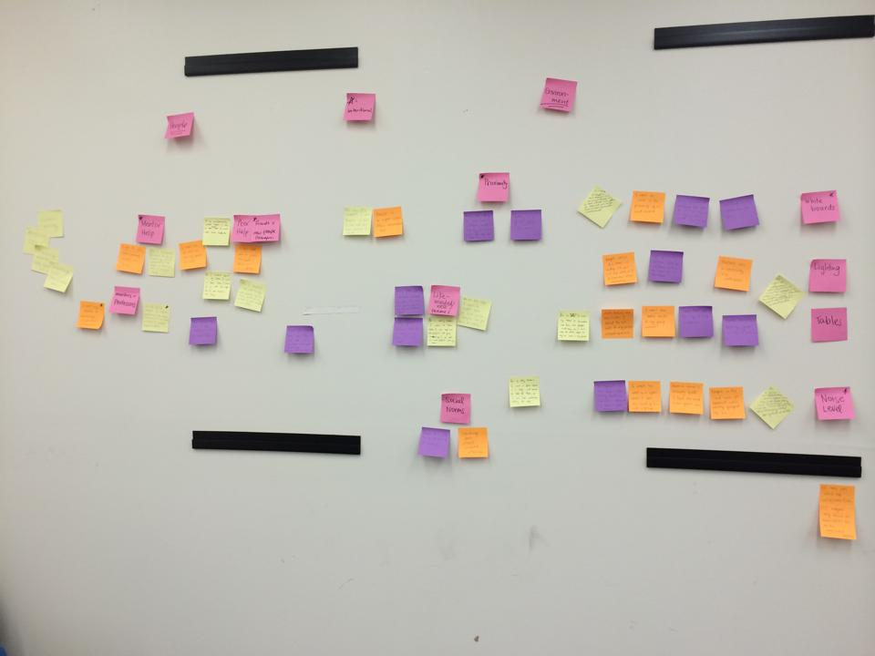
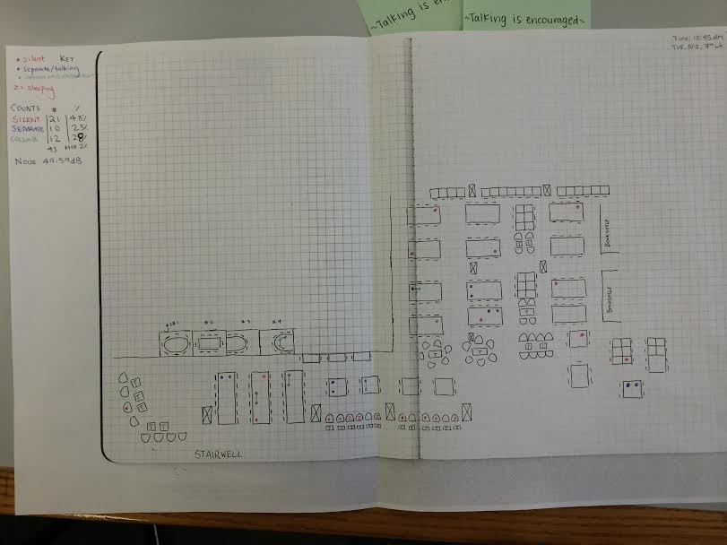
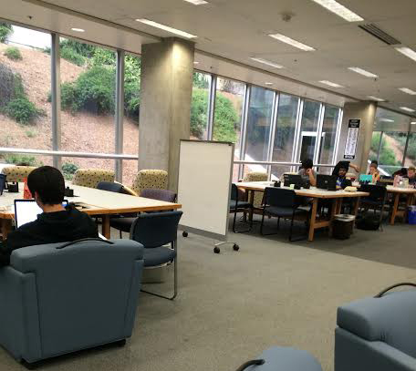

For my cognitive science group research project, my team conducted a 3 month study on collaborative workspaces. As part of a first-time experimental classroom with a much more dynamic group setting, we were very curious about how collaboration had an impact on us. Is working together with other people beneficial, and in what ways? What makes people work together, and how do we optimize these interactions?
Through our early user research, we found that most students directly or indirectly reported positive effects of collaborative work, with the top reasons being that it is effective in lightening stress through more distributed cognition, and that it's enjoyable for students to work in.
As it mostly seemed, collaboration is the result of a top-down process; if the infrastructure is not present through some form of prior suggestion, permission, or platform for collaboration, most students will not be able to create the resources needed. For many though, having inadequate infrastructure was just as bad as having no infrastructure; even through minor flaws in what a collaborative space could afford its users, the space would end up not being used as designated.
After many needfinding conversations, we noted all concerns or complaints about spaces seemed to belong in 1 of 4 groups:
With the general concerns of our users in mind, we began directly studying the spaces our university designated for collaborative use.
After many hours observing he available collaborative spaces, we were able to collect a laundry list of violations of the above four defined principles of what makes a good workspace. We gathered our data by pooling our team's behavioral observations and directly asking users why they were behaving a particular way in the current space we were in. Through this, we generated an affinity diagram to attempt to categorize all of the violations we found.
The issues ended up boiling down to a few main categories:
One common offensive across nearly every study space was table size. On first thought, one might assume that students need big tables so they can fit everything they need in front of them. However, it turns out that students can't gather around huge tables. Even the rooms with the word "collaborate" painted on the wall had tables so large you couldn't work with anyone sitting next to you without them being a few feet away. The single-studiers were in heaven - the collaborative students couldn't collaborate. Other features of the room, like whiteboards and outlets, were also very misplaced. The majority of the room was no where near the resources that students could use for group work, resulting in no usage and often led students to other locations.
Another common problem often not taken into account about a space is designing features to be socially acceptable to use. For example, in one of the lounges we examined, there was a completely open wall with a standing desk. Standing desks, in theory, are wonderful. They are good for your posture and reduce strain on your back. However, being the only one standing in the room makes people feel uncomfortable, or like they don't belong in the space, especially since the standing desk forced you to face a wall with everyone else looking at your back. Because of this, the standing desk seems to always go to waste.
These observations were good, and were helpful to move us towards thinking about how we could combat some of the more major issues with some of the spaces on campus. However, we still needed a more quantitative way to assess student behaviors. To do this, we drafted a ampping diagram of our collaborative spaces to quickly record where student groups chose to sit, and better categorize what type of work they would bring to the space.
With all of our data in hand, we were able to find some interesting correlations, and verify many of our empirical observations. For one, accessibility to resources was much more of a factor than we had thought; almost no one chose to work somewhere without outlets, tables with depths to their center of greater than 3 feet had less than half the engagement of normal tables, and sections with whiteboards had on average three times as many students near them. Desks facing the wall had almost no engagement, unless the space was overly full (which did occur during midterm season.)
We also found something that we id not expect; the number of self-studiers in a collaborative space had a great impact on the number of people who would engage in collaborative work. Upon asking students about this phenomenon, it became a lot clearer. No one felt comfortable disrupting their peers who seemed deep in their quite work, even when the space was designed to be loud (some of the spaces we studied even had 'talking is encouraged signs hung up.')
At this point, we felt confident in our understanding of the problem, and were ready to move on to prototyping solutions to try to improve the space, and that would also serve as further tests to validate our hypotheses about collaborative spaces.
With little money to work with for prototyping solutions to this problem, we started with tackling perception and awareness. Since typically it seems that people err on the side of not reading signage in collaborative spaces, we decided to try to have very targetted messaging near the power outlets, an affordance that they usually were searching for anyway. We placed small sticky notes near all of the outlets with a positively worded message letting them know that the space they are in has been designated as collaborative and that talking is encouraged.
Our test seemed to be highly effective in catching people's attention, especially the administration. Within a few days of our sticky notes being in place, we were surprised to find them replaced by more officially branded signs from the university. Although it was interesting to see relatively quick change from the administration, it was interesting to see the tone change that they brought to the messaging. With both notices, we reached our desired effect - people more were seen talking about their work in the collaborative workspaces.
One of the next experiments we made was watching how people readjusted their seating based on us inserting roll-able whiteboards next to some of the tables in the space.
With the addition of whiteboards, again we saw positive results. Technically you were supposed to check out a whiteboard and markers. This was hard to enforce with the whiteboards, but easy to enforce with the markers. By just buying our own markers and putting them in with the whiteboards centered in the space, we were able to notably alter the flow of where students sat with more than a degree of standard deviation.
We also learned something new from this experiment; the most effective whiteboards were those that already had previous work written on it. Blank whiteboards, although inviting, were not nearly as inviting as a whiteboard that someone else had clearly used to do their own work not too long ago.
As our time with the study drew to an end, we hoped to pass our findings on to someone in the university that could put them to good use. Upon some poking around, we found that the Learning Spaces Program existed, and is responsible for pushing for innovative collaborative change on campus. Unfortunately even in this domain there is an incredible amount of bureaucracy, and many of their staff were mad at the changes we made (and requested we stop immediately.) others, like the program director Kymberly Goodson, were an honor to meet. I'm glad she is working with the department, and I'm glad we were able to share some of our findings with her.
For the future we hope to see more of these ideas implemented across campus; especially as a student, it is frustrating to see so much tuiton go towards resources that aren't used because they weren't thought out well enough in advance. It is clear that there are many simple measurable ways to improve a space - the rest is implementation and execution.
If you are interested in readjusting your collaborative environment, or otherwise talking about the study, feel free to ask me out for coffee. I'd especially love to see continued work on campus to improve the collaborative environments for the student body.
. . .
For a longer read of our process with a different perspective, check out our blog posts on Medium.